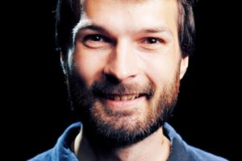
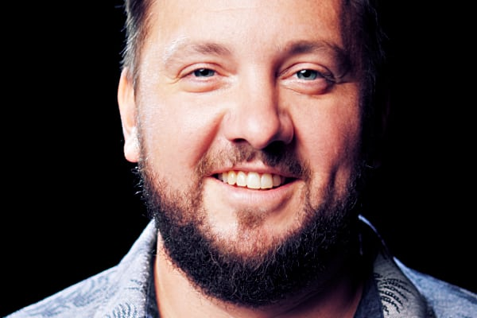

Autoři projektu
Václav Flíček
Miluje příběhy, a díky tomu vystudoval filmovou školu. Schopnost vyprávění maximálně zúročuje hlavně při přípravě her a audio příběhů.
Zajímá se o propojování lidí. Uvědomil si, v čem spočívá význam slova spolupráce a těší se z pokroků, které se díky tomu dějí. Velkou radost mu dělá podporující manželka a dvě krásné dcerky.
Zdeněk Sklenář
Vystupování na veřejnosti je pro něj přirozené stejně jako práce s dětmi. Od začátku vzal projekt za svůj a vkládá do něj obrovské množství energie.
Utvrzuje se v přesvědčení, že budoucnost našich dětí je závislá na otevřené spolupráci s nimi, dostatečném prostoru a respektu. S manželkou Jitkou vychovává dva zvídavé, zdravé kluky.